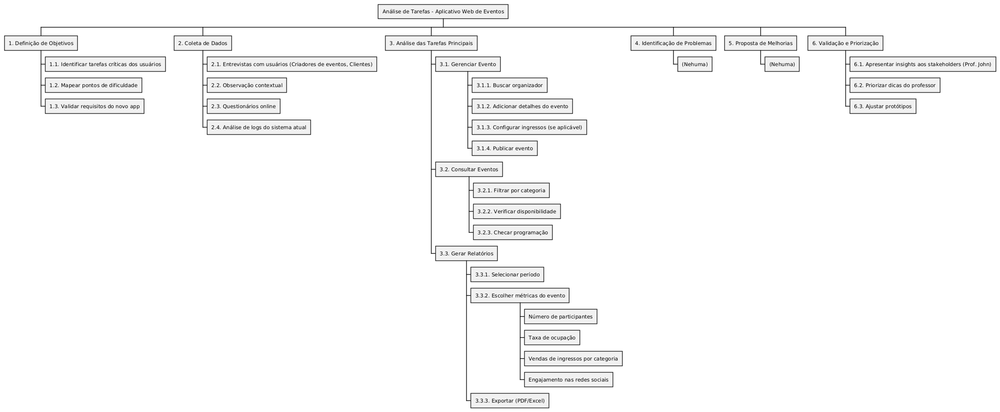
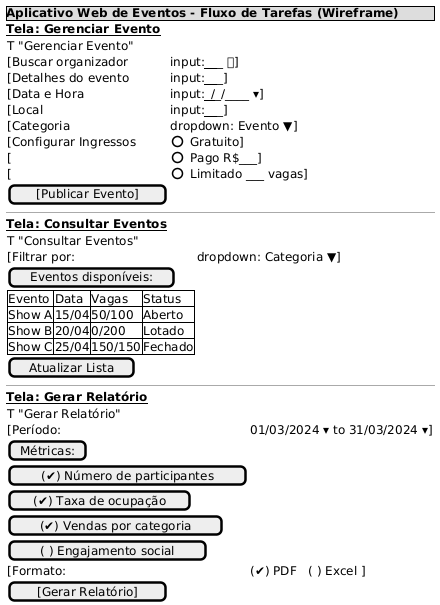

06 - Análise de Tarefas
Contexto:
Estámos desenvolvendo um novo aplicativo web para facilitar a gestão de eventos, consulta de eventos e atendimento aos participantes. A equipe de UX/UI precisa realizar uma análise de tarefas para entender como os usuários (organizadores de eventos, participantes e administradores) interagem com o sistema atual e identificar oportunidades de melhoria.
1. Objetivo da Análise de Tarefas
- Mapear as principais tarefas realizadas pelos usuários no sistema atual.
- Identificar pontos de dificuldade, redundâncias e oportunidades de otimização.
- Validar se o novo aplicativo atenderá às necessidades dos usuários.
2. Público-Alvo (Personas)
| Perfil | Tarefas Principais |
|---|---|
| Organizador | Gerenciar eventos, configurar ingressos |
| Administrador | Aprovar eventos, gerar relatórios |
| Participante | Consultar eventos, fazer inscrições |
3. Métodos de Coleta de Dados
- Entrevistas com usuários: Perguntar sobre fluxos de trabalho e desafios.
- Observação contextual: Acompanhar usuários em seu ambiente real.
- Questionários online: Coletar feedback quantitativo.
- Análise de logs: Verificar padrões de uso no sistema atual.
4. Principais Tarefas a Serem Analisadas
| Tarefa | Passos Identificados | Possíveis Problemas |
|---|---|---|
| Gerenciar Evento | 1. Buscar organizador → 2. Adicionar detalhes → 3. Configurar ingressos → 4. Publicar evento | Lentidão na busca de organizadores |
| Consultar Eventos | 1. Filtrar por categoria → 2. Verificar disponibilidade → 3. Checar programação | Dados desatualizados |
| Gerar relatório | 1. Selecionar período → 2. Escolher métricas → 3. Exportar PDF/Excel | Interface confusa |
5. Ferramentas Utilizadas
- Mapeamento de fluxo: Figma ou Miro para diagramas.
- Gravação de sessões: Hotjar ou Lookback para análise de interações.
- Organização de dados: Excel ou Airtable para catalogar tarefas.
6. Resultados Esperados
- Lista de tarefas críticas a serem otimizadas no novo app.
- Protótipo de fluxos aprimorados (ex.: publicação de eventos em menos etapas).
- Relatório de insights com recomendações para a equipe de desenvolvimento.
7. Próximos Passos
- Validar os resultados com stakeholders.
- Priorizar melhorias com base na análise.
- Aplicar mudanças no design do novo aplicativo.
Conclusão:
A análise de tarefas ajudará a garantir que o novo aplicativo web seja intuitivo, eficiente e alinhado com as necessidades reais dos usuários.
Aqui está um diagrama WBS (Work Breakdown Structure) em PlantUML para representar as tarefas da análise de tarefas do aplicativo web:
@startwbs
skinparam monochrome true
skinparam shadowing false
skinparam ArrowColor #000000
skinparam BackgroundColor #FFFFFF
* Análise de Tarefas - Aplicativo Web de Eventos
** 1. Definição de Objetivos
*** 1.1. Identificar tarefas críticas dos usuários
*** 1.2. Mapear pontos de dificuldade
*** 1.3. Validar requisitos do novo app
** 2. Coleta de Dados
*** 2.1. Entrevistas com usuários (Criadores de eventos, Clientes)
*** 2.2. Observação contextual
*** 2.3. Questionários online
*** 2.4. Análise de logs do sistema atual
** 3. Análise das Tarefas Principais
*** 3.1. Gerenciar Evento
**** 3.1.1. Buscar organizador
**** 3.1.2. Adicionar detalhes do evento
**** 3.1.3. Configurar ingressos (se aplicável)
**** 3.1.4. Publicar evento
*** 3.2. Consultar Eventos
**** 3.2.1. Filtrar por categoria
**** 3.2.2. Verificar disponibilidade
**** 3.2.3. Checar programação
*** 3.3. Gerar Relatórios
**** 3.3.1. Selecionar período
**** 3.3.2. Escolher métricas do evento
***** Número de participantes
***** Taxa de ocupação
***** Vendas de ingressos por categoria
***** Engajamento nas redes sociais
**** 3.3.3. Exportar (PDF/Excel)
** 4. Identificação de Problemas
*** (Nehuma)
** 5. Proposta de Melhorias
*** (Nehuma)
** 6. Validação e Priorização
*** 6.1. Apresentar insights aos stakeholders (Prof. John)
*** 6.2. Priorizar dicas do professor
*** 6.3. Ajustar protótipos
@endwbs

Visualização do Diagrama:
O diagrama organiza as tarefas em uma estrutura hierárquica, mostrando:
- Objetivos da análise.
- Métodos de coleta de dados.
- Tarefas principais com subtarefas detalhadas.
- Problemas identificados.
- Propostas de melhorias.
- Validação final com stakeholders.
Como Usar:
- Copie o código e cole em um editor PlantUML (como PlantText ou integrado a ferramentas como VS Code).
- O diagrama será gerado automaticamente.
Aqui está um protótipo de fluxo de tarefas em formato wireframe usando PlantUML Salt, simulando telas básicas do aplicativo web de eventos:
@startsalt
{
{* <b>Aplicativo Web de Eventos - Fluxo de Tarefas (Wireframe)</b> }
__**Tela: Gerenciar Evento**__
{T "Gerenciar Evento"
[Buscar organizador | input:___________ 🔍]
[Detalhes do evento | input:___________]
[Data e Hora | input:___/___/____ ▾]
[Local | input:___________]
[Categoria | dropdown: Evento ▼]
[Configurar Ingressos | ( ) Gratuito]
[ | ( ) Pago R$___]
[ | ( ) Limitado ___ vagas]
[ [Publicar Evento] ]
}
--------------------------------------------------------------
__**Tela: Consultar Eventos**__
{T "Consultar Eventos"
[Filtrar por: | dropdown: Categoria ▼]
[Eventos disponíveis:]
{#
Evento | Data | Vagas | Status
Show A| 15/04 | 50/100 | Aberto
Show B| 20/04 | 0/200 | Lotado
Show C| 25/04 | 150/150 | Fechado
}
[Atualizar Lista]
}
--------------------------------------------------------------
__**Tela: Gerar Relatório**__
{T "Gerar Relatório"
[Período: | 01/03/2024 ▾ to 31/03/2024 ▾]
[Métricas:]
[ (✔) Número de participantes ]
[ (✔) Taxa de ocupação ]
[ (✔) Vendas por categoria ]
[ ( ) Engajamento social ]
[Formato: | (✔) PDF ( ) Excel ]
[ [Gerar Relatório] ]
}
}
@endsalt

Características do Protótipo:
- Gerenciar Evento:
- Campo de busca com ícone de lupa 🔍
- Campos para detalhes do evento
- Configuração de ingressos
-
Botão de ação principal
-
Consultar Eventos:
- Dropdown para filtro
- Tabela de eventos disponíveis
-
Botão para atualização manual
-
Gerar Relatório:
- Seletores de período
- Checkboxes para métricas
- Opções de formato de exportação
Como Visualizar:
- Copie o código para qualquer editor PlantUML (como PlantText)
- O resultado será um wireframe estático com:
- Elementos interativos simulados (inputs, dropdowns, checkboxes)
- Organização visual por telas
- Anotações contextuais
Variações Possíveis:
- Para fluxos navegacionais, adicione setas entre telas:
@startsalt
{
[Tela 1] -> [Tela 2] -> [Tela 3]
}
@endsalt
- Para detalhar componentes, use notação
+:
@startsalt
{
+ Botão Primário [Confirmar]
+ Botão Secundário [Cancelar]
}
@endsalt
Este formato é ideal para discussões iniciais com a equipe, permitindo ajustes rápidos antes de protótipos high-fidelity.
histórias de usuário
A partir do cenário, análise de tarefas e protótipo, podemos levantar as seguintes histórias de usuário utilizando o formato padrão ("Como [persona], quero [ação] para [benefício]"):
1. Histórias para Organizadores de Eventos
US01 - Como organizador, quero buscar e adicionar detalhes do evento rapidamente para agilizar a publicação.
(Critério de Aceitação: Formulário com validação em tempo real)
US02 - Como organizador, quero configurar diferentes tipos de ingressos para atender diferentes públicos.
(Critério de Aceitação: Opções para gratuito, pago e limitado)
US03 - Como organizador, quero ver o status de ocupação em tempo real para gerenciar a capacidade do evento.
(Critério de Aceitação: Indicador visual de vagas disponíveis)
2. Histórias para Administradores
US04 - Como administrador, quero aprovar eventos antes da publicação para garantir qualidade.
(Critério de Aceitação: Fluxo de aprovação em duas etapas)
US05 - Como administrador, quero gerar relatórios de participação por período para análise mensal.
(Critério de Aceitação: Opções de PDF/Excel com gráficos embutidos)
US06 - Como administrador, quero receber alertas de eventos lotados para planejar expansão.
(Critério de Aceitação: Notificação quando ocupação >90%)
3. Histórias para Participantes
US07 - Como participante, quero consultar eventos por categoria para encontrar eventos de interesse.
(Critério de Aceitação: Filtros por tipo, data e localização)
US08 - Como participante, quero inscrever-me em eventos via chat para resolver dúvidas sem ligar.
(Critério de Aceitação: Botão "Inscrever" com chat integrado)
4. Histórias Técnicas (Derivadas dos Problemas Identificados)
US09 - Como sistema, preciso sincronizar a disponibilidade de vagas a cada 5 minutos para evitar overselling.
US10 - Como equipe de UX, queremos redesenhar o fluxo de relatórios para reduzir cliques desnecessários.
(Critério de Aceitação: Teste A/B com redução de 50% no tempo de geração)
Priorização (MoSCoW)
| Categoria | Histórias |
|---|---|
| Must | US01, US03, US09 (críticas para o MVP) |
| Should | US02, US05, US07 (importantes pós-lançamento) |
| Could | US04, US08 (melhorias secundárias) |
| Won't | US10 (postergada para v2.0) |
Mapeamento para Protótipo
| História | Tela no Protótipo Salt | Problema Relacionado |
|---|---|---|
| US01 | "Gerenciar Evento" | Campo de busca lento |
| US03 | Tabela de eventos | Dados desatualizados |
| US05 | Seção de relatórios | Interface confusa |
Próximos Passos
- Validar histórias com stakeholders.
- Refinar critérios de aceitação com testes de usuário.
- Associar histórias a épicos no backlog (ex.: "Otimização de Gestão de Eventos").
Essas histórias cobrem todos os pontos críticos identificados na análise de tarefas e protótipo, garantindo alinhamento entre necessidades do usuário e soluções técnicas.
Para organizar as histórias de usuário no Scrum em relação a Épicos e Features, você pode seguir esta estrutura hierárquica, alinhada com as melhores práticas de Agile:
1. Hierarquia de Organização
graph TD
A[Épico] --> B[Feature]
B --> C[Histórias de Usuário]
C --> D[Tarefas Técnicas]
- Épico: Grande iniciativa estratégica (ex.: "Melhorar Gestão de Eventos").
- Feature: Funcionalidade entregável dentro do épico (ex.: "Fluxo de Ingressos").
- História de Usuário: Requisito específico (ex.: "Configurar ingressos").
- Tarefas: Itens técnicos para implementação (ex.: "Criar endpoint de validação de ingressos").
2. Exemplo Prático (Baseado no Cenário Anterior)
Épico 1: Otimização do Processo de Eventos
| Feature | Histórias Associadas (US) |
|---|---|
| Busca Rápida de Eventos | US01 (Busca por categoria) |
| Gestão de Ingressos | US02, US04 (Aprovação) |
Épico 2: Controle de Vagas em Tempo Real
| Feature | Histórias Associadas (US) |
|---|---|
| Sincronização de Vagas | US03, US09 (Alertas) |
Épico 3: Autoatendimento do Participante
| Feature | Histórias Associadas (US) |
|---|---|
| Consulta de Eventos | US07 |
| Canal de Inscrição | US08 (Chat de Inscrições) |
3. Como Priorizar no Backlog
- Classificar por valor e complexidade:
- US01 e US03 (alto valor, baixa complexidade) → Sprint atual.
-
US10 (alta complexidade) → Sprint futura.
-
Quebrar épicos em features menores:
-
Ex.: O épico "Otimização de Eventos" pode ser dividido em:
- Feature 1: Busca de eventos (1 sprint).
- Feature 2: Ingressos (2 sprints).
-
Usar critérios INVEST:
- Garantir que cada história seja Independente, Negociável, Valiosa, Estimável, Pequena e Testável.
4. Ferramentas para Organização
- Jira/ClickUp: Criar épicos > features > histórias.
[Épico] Melhorar Gestão de Eventos
├── [Feature] Busca Rápida
│ ├── US01: Buscar evento em <2s
│ └── US05: Filtrar por categoria
└── [Feature] Ingressos
├── US02: Configurar ingressos
└── US04: Aprovação de admin
- Miro: Mapeamento visual com cores por prioridade.
5. Dicas para Refinamento
- Sprint Planning:
- Selecionar features prioritárias e desmembrar em histórias para a sprint.
- Ex.: Na Sprint 1, implementar a Feature "Busca Rápida" (US01 + US05).
- Definição de Pronto (DoD):
- Para US03 ("Vagas em tempo real"), definir:
- Integração com API de vagas concluída.
- Testes de carga realizados.
6. Exemplo de Sprint Backlog
| Sprint 1 | Histórias | Prioridade |
|---|---|---|
| Feature: Busca Rápida | US01, US05 | Must |
| Feature: Ingressos | US02 | Should |
7. Validação com Stakeholders
- Revisar épicos/features a cada Reunião de Roadmap.
- Ajustar prioridades com base no feedback (ex.: adiantar US07 se participantes exigirem busca avançada).
Essa estrutura mantém o backlog focado no valor do usuário e adaptável a mudanças, seguindo os princípios do Scrum.